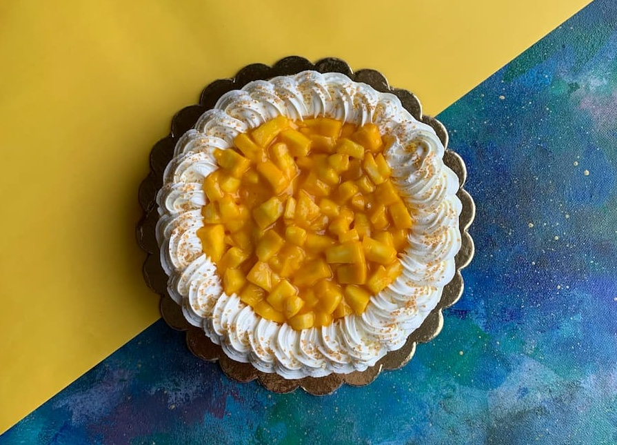
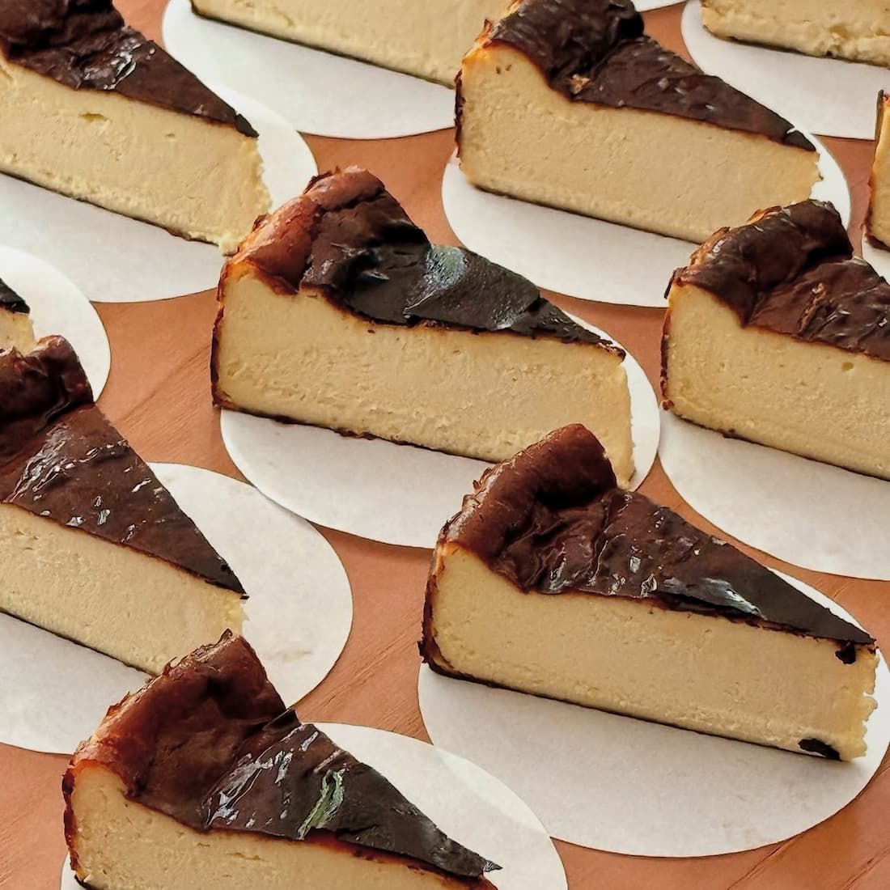
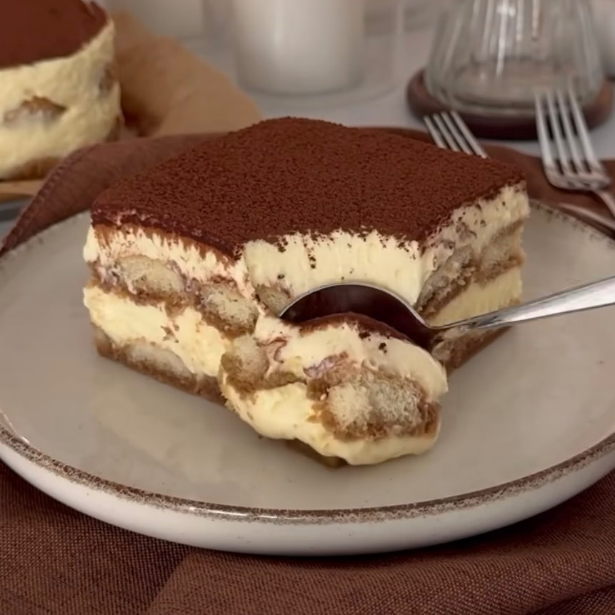

baking something good...
baking something good...

Everything you need to know about finding, ordering and enjoying the freshest eggless cakes in Chandigarh and across Tricity.
If you've ever tried to find a truly good eggless cake in Chandigarh — one that doesn't taste like a compromise, one that's moist and rich and actually worth celebrating with — you'll know it's not always straightforward. The good news is that the city's bakery scene has matured considerably. Eggless baking is no longer a niche afterthought; it's become a craft in its own right, driven by growing demand from vegetarians, health-conscious customers, and people who simply want a great cake without the eggs.
At Half Baked, eggless has been our default since we opened our doors in 2017. Not because it was a trend, but because we believed — and still believe — that the best cakes should be available to everyone. Over nearly a decade, we've refined our recipes, experimented with techniques from patisseries around the world, and built a menu of eggless cakes that we're genuinely proud to put in front of our customers. This guide covers everything you need to know about eggless cakes in Chandigarh: what to look for, which flavours work best, how eggless differs from vegan, and how to get one delivered fresh to your door.
Order online via Zomato or WhatsApp us for a custom eggless creation.
This is worth addressing honestly, because eggless baking comes with real technical challenges that not every bakery takes seriously. Eggs in a conventional cake perform three jobs at once — they bind the batter, add moisture, and provide structure through protein coagulation during baking. Remove the egg and you need to find thoughtful substitutes that do all three jobs without leaving the finished cake dense, rubbery or flat.
The best eggless cakes use a combination of approaches: yoghurt or buttermilk for moisture and tenderness, flaxseed or chia as binding agents in denser recipes, aquafaba (the liquid from chickpeas) for lift and airiness in lighter sponges, and carefully adjusted leavening to compensate for the missing structure. When done well, the result is indistinguishable from — and in many cases preferred over — its egg-based counterpart. When done poorly, you end up with something heavy, gummy and noticeably "off." The difference between the two comes down to recipe development, quality of ingredients and, above all, experience.
The other factor that makes an enormous difference is freshness. Eggless cakes benefit more than any other type from being baked to order. A freshly baked eggless sponge that goes straight into a box and onto your doorstep will always outperform one that's been sitting in a display case since morning. This is why every cake at Half Baked is baked from scratch only after your order is placed — no pre-baked sponges, no freezer inventory, no shortcuts.

Every cake at Half Baked is baked fresh only after your order is confirmed.
Over nine years of baking, we've learned which flavours translate most beautifully into eggless cakes. Some recipes — particularly those relying on the egg for lift and structure — require more careful adaptation. Others are almost easier without the egg. Here are the flavours we've put the most work into, and the ones our customers keep coming back for.
Rich, deeply cocoa-forward with a fudgy crumb that holds moisture exceptionally well in eggless form. Our most ordered flavour, year after year.
Deceptively simple. A well-made eggless vanilla sponge is a benchmark of skill — light, fragrant and infinitely versatile as a base for custom cakes.
Soft eggless sponge layered with fresh whipped cream and strawberries. A seasonal favourite that has quietly become one of our bestsellers.
Vanilla sponge with blueberry compote and whipped cream. Bright, lightly sweet, and one of the most requested custom cake flavours we do.
A crowd-pleaser without exception. Spiced Biscoff spread layered through a soft eggless base — warm, caramelised and completely addictive.
A summer staple. Fresh mango pulp folded into the batter and layered in the frosting — tropical, vibrant and hard to say no to.
Eggless red velvet with cream cheese frosting. Visually striking and surprisingly easy to get right without eggs when the recipe is dialled in.
Espresso-soaked sponge with a mascarpone-style frosting. Elegant, adult and one of our personal favourites on a slow afternoon.
Beyond layered cakes, our eggless dessert range also includes Burnt Basque Cheesecake, tiramisu (made eggless using whipped cream in place of egg yolks), Biscoff brownies, and a rotating selection of petit fours and tarts — all made without eggs, all available for delivery across Chandigarh.
Follow us on Instagram for new flavours, designs and seasonal specials.

Our Burnt Basque Cheesecake — fully eggless, endlessly popular.
This is a question we get asked often, and it's worth clearing up because the two terms are frequently confused. Eggless simply means no eggs — but the recipe may still contain dairy products like butter, milk and cream. The vast majority of our cakes fall into this category: eggless by default, but made with high-quality dairy.
Vegan goes one step further — no animal products of any kind, including dairy. A vegan cake uses plant-based alternatives for butter (coconut oil or vegan margarine), milk (oat, almond or soy) and cream (whipped coconut cream or cashew-based alternatives). Done well, a vegan cake can be every bit as indulgent as a conventional one. Done lazily, it can taste thin and flat. We take vegan baking seriously at Half Baked, and our fully vegan cake options are available on request — just let us know when you place your order and we'll adapt accordingly.
💡 All Half Baked cakes are eggless by default. Fully vegan options are available on request — simply mention it when ordering and we'll handle the rest.
One of the things we hear most often from new customers is surprise at just how much is possible with a fully custom eggless cake. There's a lingering assumption that eggless means limited — that you can't do a multi-tier floral cake, or a mirror glaze, or a character cake without eggs. You absolutely can, and we do it regularly.
Our custom eggless cakes in Chandigarh cover the full spectrum: themed birthday cakes for kids and adults, photo cakes, pinata cakes, pull-me-up cakes, floral and Korean buttercream cakes, wedding and engagement cakes, rasmalai cakes, gulab jamun cakes and anything else you can dream up. We work with you on flavour, design, size and dietary requirements to create something that feels genuinely personal — and genuinely delicious.
For gluten-free eggless cakes, we also have options available — making it possible to cater to multiple dietary requirements simultaneously within the same order. If you're organising a celebration where guests have varying needs, reach out to us and we'll work out a solution that makes sure no one at the table is left out.

Custom eggless designs — from floral to themed, we build it around your brief.
Tell us your vision — flavour, design, occasion — and we'll take it from there.
For most of our eggless cake range, same-day delivery across Chandigarh is available. Place your order in the morning, and we'll bake and deliver your cake the same day — fresh, properly packaged and on time. We deliver to all sectors across Chandigarh, and our team is familiar with the city well enough to get your cake there without fuss.
For highly detailed or multi-tier custom eggless cakes, we recommend giving us a little more notice — ideally 24 to 48 hours — so we have the time to do the design justice. When you get in touch, we'll always be straightforward about what's achievable within your timeline. We'd rather be honest about lead times than rush something that deserves care.
Same-day delivery available across Chandigarh. Contact us directly to arrange delivery in surrounding areas.
For customers in Mohali, Panchkula, Zirakpur and New Chandigarh, eggless cake delivery is available on request. Call us or WhatsApp us directly to discuss your order, preferred delivery time and any additional charges for outstation delivery. We'll plan it out with you to make sure everything arrives in perfect condition.
If you're comparing options across different bakeries in Chandigarh, here are a few things worth keeping in mind. First, ask whether the cake is baked to order or pre-made. Fresh-baked eggless cakes are categorically better — the texture and moisture difference is significant. Second, ask about the substitutes being used. A bakery that can explain its eggless technique with some confidence is one that has actually thought about it. Third, check reviews specifically for eggless orders — the feedback from other customers who've ordered eggless is the most useful signal you'll find.
We don't think Half Baked is the only good bakery in Chandigarh. But we do think our commitment to freshness, eggless quality and honest customer communication is something we've earned the right to stand behind. Our 4.6 star average on Zomato across more than 1,000 five-star reviews reflects years of customers who ordered eggless and were happy enough to come back.

Our eggless tiramisu — one of Chandigarh's most ordered desserts.
The demand for eggless birthday cakes in Chandigarh is the highest it's ever been, and it spans every age group — from first birthday smash cakes to milestone adult celebrations. But eggless cakes aren't just for birthdays. We regularly make eggless wedding cakes and eggless engagement cakes for couples who want something elegant and fully vegetarian. Our eggless anniversary cakes, baby shower cakes and graduation cakes are all popular, and we make eggless corporate cakes for office celebrations and client gifting throughout the year.
Seasonally, our eggless Diwali cakes, eggless Christmas cakes and eggless Valentine's Day cakes tend to sell out quickly — so if you're planning ahead for a seasonal celebration, it's worth reaching out early to confirm availability and lock in your order.
🎂 Planning a celebration in Chandigarh? Every occasion deserves a cake baked fresh. Reach out early for seasonal orders — we fill up fast.
Same-day delivery across Chandigarh. Custom orders welcome. Always baked fresh.